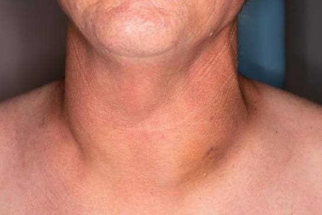
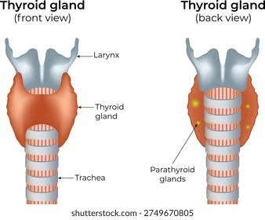
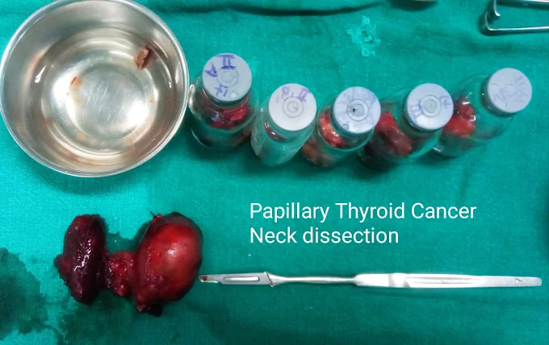

Thyroid Nodule or Thyroid Cancer? What a Neck Lump Can Mean

Finding a lump in your neck can be frightening — but the truth is, thyroid nodules are extremely common, and the large majority are completely harmless. Studies suggest that up to half of adults have at least one thyroid nodule, most of which are never even noticed without an ultrasound. Still, a small percentage of these nodules turn out to be thyroid cancer, which is why knowing what to look for — and when to see a specialist — matters.
What is a thyroid nodule?
The thyroid is a small, butterfly-shaped gland at the base of your neck, just below your Adam's apple. It produces hormones that regulate your metabolism, heart rate, and energy levels. A nodule is simply a lump or growth within this gland. Most nodules are fluid-filled cysts or benign overgrowths of normal thyroid tissue, and they cause no symptoms at all.

Warning signs that need evaluation
Most thyroid lumps don't hurt and grow very slowly, which is exactly why it's easy to ignore them. Consider seeing a specialist promptly if you notice:
- A lump that grows quickly over weeks rather than months or years
- A hard, fixed lump that doesn't move easily when you swallow
- Hoarseness or voice changes that don't go away
- Difficulty swallowing or breathing
- Persistent neck pain that sometimes radiates to the ear
- Swollen lymph nodes in the neck alongside the lump
- A personal or family history of thyroid cancer, or prior radiation exposure to the head and neck
Most nodules are benign. Roughly 90–95% of thyroid nodules turn out to be non-cancerous. The presence of a lump alone is not a reason to panic — but it is a reason to get it properly evaluated.
How thyroid nodules are diagnosed
If you notice a lump, your doctor will typically start with a physical examination followed by an ultrasound of the neck, which gives a clear picture of the nodule's size, shape, and characteristics. Depending on what the ultrasound shows, a fine needle aspiration (FNA) biopsy may be recommended — a simple, low-discomfort procedure where a small sample of cells is taken from the nodule using a thin needle, and examined under a microscope. Blood tests to check thyroid hormone levels are usually done as well.
When surgery is needed
Not every nodule requires surgery. Many benign nodules are simply monitored over time with periodic ultrasounds. Surgery — usually a partial or total thyroidectomy — is generally recommended when a biopsy shows cancer or suspicious cells, when a nodule is large enough to cause pressure symptoms (difficulty breathing or swallowing), or when a nodule continues to grow despite being benign on biopsy.

At CMC Cancer Institute, thyroid surgery is performed with meticulous nerve-sparing technique to protect the recurrent laryngeal nerve, which controls the voice box — minimising the risk of voice changes after surgery. If the entire thyroid is removed, patients will need lifelong daily thyroid hormone replacement (thyroxine), which is simple to manage and allows for a completely normal, active life.
Advanced care beyond surgery
For certain types of thyroid cancer, surgery is only part of the treatment plan. CMC Cancer Institute has on-site facilities for radioactive iodine (RAI) scanning and ablation, which can destroy any remaining thyroid tissue or microscopic cancer cells after surgery. We also offer SPECT-CT imaging, which combines functional and anatomical scanning to precisely locate any residual or recurrent thyroid tissue, helping guide RAI dosing and long-term follow-up.
Every thyroid cancer case is reviewed by our multidisciplinary tumour board (MDT) — a team of surgeons, endocrinologists, nuclear medicine specialists, and oncologists working together to design the most effective, individualised treatment plan for each patient.
The bottom line
A neck lump is common, and in the vast majority of cases, it isn't cancer. But because a small number of nodules are cancerous — and because early detection makes treatment simpler and more effective — any new or growing lump in the neck deserves a proper evaluation rather than a guess.
Noticed a lump in your neck?
Book a consultation with Dr. Bidhan Koirala for a thorough evaluation.
Book a ConsultationThis article is for general educational purposes only and is not a substitute for professional medical advice, diagnosis, or treatment. Always consult Dr. Bidhan Koirala or another qualified healthcare provider with any questions regarding a medical condition.